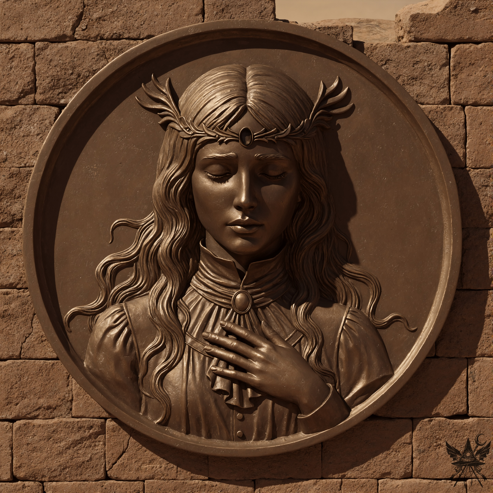

頭の中で、手持ちの駒と状況を整理する。コンガラはあの小兎姫を、あろうことか軍の司令官代理に据えようとしている。真犯人が誰であれ、彼女が無罪放免となれば、明羅の椅子はあの女のものになる。幽香にとって、それは決して面白い展開ではないはずだ。
（ひと波乱起こしてやろうかしら。コンガラを小兎姫にけしかけるのよ）
神殿を迂回し、コンガラの元へと歩み寄る。彼の顔には深い悲壮感が漂い、髪も乱れていたが、額から伸びる一本の鋭い角だけは、持ち主の威厳を示すように天を衝いていた。顔に刻印のある幽霊兵士たちが一列に並び、主の命を待っている。こちらの気配に気づくと、コンガラは重々しく口を開いた。
「見習いよ。命じた務めは成し遂げたか？」
「ええ、図書室はすっかり綺麗になりましたよ」
「大儀だ。だが、急を要する事態が発生したゆえ、浄化の儀式は後回しとする。しばらくは身体を休め、神殿の静寂を享受するがよい」
「コンガラ様。少しよろしいでしょうか。今回の件について、耳に入れたいことがありまして」
コンガラの表情がさっと曇る。鋭い角の切先をこちらに向けるように、ゆっくりと身体の向きを変えた。
「我が最も忠実な腹心、明羅が命を落としたと報告を受けたのだ。その死を愚弄するような真似をすれば、そなたも同じ運命を辿ることになるぞ」
「まさか。むしろ、真相究明のお手伝いをしたいのです。……小兎姫が、幻想郷の警察官を騙るただの詐欺師だということはご存知でしたか？」
「何だと？」
「信じられないなら、部下を幻想郷へ送って確認なさってください。警察署の場所なら、私が案内できますから。それに、あの小さな子供は無実です。解放して差し上げてはいかがでしょう」
コンガラは不快げに眉間へ皺を寄せた。
「よかろう。あの無礼な女は、初めから気に入らなかったのだ。何らかの処置が必要だな」
「それなら、幻想郷へ追放し、もし戻ってきたら処刑すると脅すのが効果的ではないかしら？」
コンガラは深く頷き、その提案を受け入れた。
（ふうん、思っていたよりずっと御しやすい男ね。こんな単純な頭で大軍を率いているなんて……。明羅こそが、この軍の真の頭脳だったに違いないわ）
「コンガラ様、私も同行させていただけませんか？ 事件現場をこの目で見れば、何か手がかりが掴めるかもしれません」
「構わんぞ、見習い。だが、決して出しゃばるでないぞ」
かくして、コンガラと五人の幽霊兵士、そしてメデアの奇妙な一団は神殿を出発した。錆びたような赤茶色の世界の中、薄黄色の砂埃を孕んだ熱風が吹き荒れている。岩の橋を渡ると、すぐに轍の跡を見つけた。それは荒涼とした谷に沿って伸び、コンガラと初めて遭遇したあの丘へと続いていた。
丘を登るにつれ、肌が粟立つような奇妙な感覚に襲われる。地獄へ来て初めて感知した、強烈な魔力の波長だ。頂上付近に差し掛かると、かつての首都の中心部だったという、要塞の遺跡が姿を現した。
頂上の岩肌が露出した地面には、直径数メートルの完璧な「円」が描かれていた。吹きすさぶ砂埃の只中にあって、そこだけが異様に澄んでいる。崩れかけた赤茶色の煉瓦壁には、大きな青銅のレリーフが埋め込まれていた。

その場に立つだけで、途方もない時間の重みがのしかかってくるような圧迫感があった。ザラザラとした乾いた煉瓦の質感に対し、鈍い光を放つ金属の表面は、地獄の熱風の中でもひんやりとした静謐さを保っている。しかし、目を閉じたその姿から伝わってくるのは、安らぎではなく、取り返しのつかない喪失感だった。額の冠の中央にあるべき「何か」が抉り取られ、ぽっかりと空いた暗い窪みが、見ているだけでこちらの体温まで奪っていくような底知れない虚無を放っていた。
「おらぬ！ 明羅殿はどこにもおらぬ！」
半分崩れた要塞の入り口から、兵士の一人が血相を変えて飛び出してきた。残りの二人が、中から窓付きの自転車を運び出してくる。
「本当に念入りに探索したのだな？」
コンガラは自ら暗がりへと足を踏み入れ、メデアもその後を追った。
足元の埃の中には、幽霊の物ではない、特徴的な溝を持つスニーカーの足跡が二種類、遺跡の入り口から外の円の中へと続いていた。崩れたレンガの隙間に、数滴の生々しい血痕が落ちている。
「自転車はここにあったのだな」
「はっ！ 血の跡のすぐ傍でございます！」
「何とも不可解な……明羅殿、なぜこのような時に姿を消したのだ……！」
コンガラは頭を抱え、絶望的な呻き声を漏らした。
メデアは壁面のレリーフに引き寄せられるように近づいた。額の空洞から、強烈な魔力が渦を巻いて漏れ出している。やはり、ここにはめ込まれていたはずの巨大な宝石が欠落しているのだ。
「見習いよ。壁から離れるのだ」
コンガラの鋭い声が、石の空間に響いた。
「申し訳ありません。ですが……」
「離れろと言っておる！」
逆らうのは得策ではない。大人しく引き下がったものの、頭の中は疑問で溢れかえっていた。結局、周辺を捜索した兵士たちも明羅の遺体を見つけることはできず、コンガラは重苦しい足取りで帰還を命じた。
下山は過酷だった。容赦なく吹き付ける熱風と砂塵に体力を奪われ、神殿に戻る頃にはすっかり疲労困憊していた。
「見習いよ。そなたは浄化の儀式を受ける必要がある。今すぐでもよいし、疲れを癒やしてからでも構わん。必要なものは兵舎にある」
泥のように眠りたかったが、奇妙な「儀式」の正体が気がかりだった。レリーフの哀しげな気配が、まだ肌にまとわりついているような気がした。